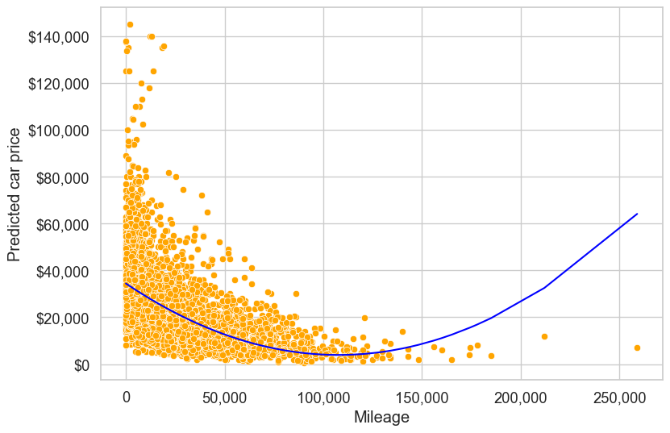
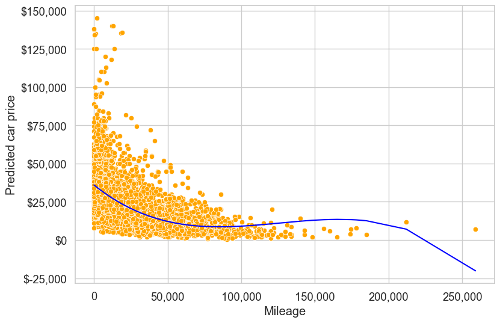

# Import libraries
import pandas as pd
import numpy as np
import statsmodels.formula.api as smf
import seaborn as sns
import matplotlib.pyplot as plt
from sklearn.preprocessing import PolynomialFeatures
from sklearn.linear_model import LinearRegression
from sklearn.metrics import root_mean_squared_error, mean_absolute_error, r2_score
sns.set_theme(style="whitegrid", font_scale=1.2)4 Extending Linear Regression
Read sections 3.3.1 and 3.3.2 of the book before using these notes.
Note: these notes focus on implementation. The book provides the conceptual explanations.
4.1 Learning objectives
By the end of this notebook you should be able to:
- Add and interpret interaction terms in linear regression models.
- Incorporate qualitative predictors and understand baseline-level encoding.
- Model interactions between qualitative and continuous predictors.
- Apply polynomial transformations to capture non-linear relationships.
- Use
PolynomialFeaturesinsklearnto generate polynomial terms and interactions.
4.2 Dataset
- Training set:
Datasets/Car_features_train.csv,Datasets/Car_prices_train.csv - Test set:
Datasets/Car_features_test.csv,Datasets/Car_prices_test.csv
We replace year with age, computed as reference_year - year, where reference_year is the most recent model year in the training data.
# Read data
trainf = pd.read_csv('./Datasets/Car_features_train.csv')
trainp = pd.read_csv('./Datasets/Car_prices_train.csv')
testf = pd.read_csv('./Datasets/Car_features_test.csv')
testp = pd.read_csv('./Datasets/Car_prices_test.csv')
train = pd.merge(trainf, trainp)
test = pd.merge(testf, testp)
# Create age feature using the most recent model year in the training data
reference_year = train["year"].max()
train["age"] = reference_year - train["year"]
test["age"] = reference_year - test["year"]
train.head()| carID | brand | model | year | transmission | mileage | fuelType | tax | mpg | engineSize | price | age | |
|---|---|---|---|---|---|---|---|---|---|---|---|---|
| 0 | 18473 | bmw | 6 Series | 2020 | Semi-Auto | 11 | Diesel | 145 | 53.3282 | 3.0 | 37980 | 0 |
| 1 | 15064 | bmw | 6 Series | 2019 | Semi-Auto | 10813 | Diesel | 145 | 53.0430 | 3.0 | 33980 | 1 |
| 2 | 18268 | bmw | 6 Series | 2020 | Semi-Auto | 6 | Diesel | 145 | 53.4379 | 3.0 | 36850 | 0 |
| 3 | 18480 | bmw | 6 Series | 2017 | Semi-Auto | 18895 | Diesel | 145 | 51.5140 | 3.0 | 25998 | 3 |
| 4 | 18492 | bmw | 6 Series | 2015 | Automatic | 62953 | Diesel | 160 | 51.4903 | 3.0 | 18990 | 5 |
4.3 statsmodels (formula API)
4.3.1 Interaction terms (continuous predictors)
We relax the constant-association assumption by adding an interaction between engineSize and age.
# Interaction between engineSize and age
model_sm_interaction = smf.ols(
formula='price ~ age*engineSize + mileage + mpg',
data=train,
).fit()
model_sm_interaction.summary()| Dep. Variable: | price | R-squared: | 0.682 |
| Model: | OLS | Adj. R-squared: | 0.681 |
| Method: | Least Squares | F-statistic: | 2121. |
| Date: | Fri, 16 Jan 2026 | Prob (F-statistic): | 0.00 |
| Time: | 10:55:41 | Log-Likelihood: | -52338. |
| No. Observations: | 4960 | AIC: | 1.047e+05 |
| Df Residuals: | 4954 | BIC: | 1.047e+05 |
| Df Model: | 5 | ||
| Covariance Type: | nonrobust |
| coef | std err | t | P>|t| | [0.025 | 0.975] | |
| Intercept | 4313.7409 | 804.871 | 5.360 | 0.000 | 2735.838 | 5891.644 |
| age | 275.3833 | 135.695 | 2.029 | 0.042 | 9.361 | 541.405 |
| engineSize | 1.52e+04 | 248.298 | 61.231 | 0.000 | 1.47e+04 | 1.57e+04 |
| age:engineSize | -896.7687 | 49.431 | -18.142 | 0.000 | -993.676 | -799.861 |
| mileage | -0.1525 | 0.008 | -17.954 | 0.000 | -0.169 | -0.136 |
| mpg | -84.3417 | 9.048 | -9.322 | 0.000 | -102.079 | -66.604 |
| Omnibus: | 2330.413 | Durbin-Watson: | 0.524 |
| Prob(Omnibus): | 0.000 | Jarque-Bera (JB): | 29977.437 |
| Skew: | 1.908 | Prob(JB): | 0.00 |
| Kurtosis: | 14.423 | Cond. No. | 2.22e+05 |
Notes:
[1] Standard Errors assume that the covariance matrix of the errors is correctly specified.
[2] The condition number is large, 2.22e+05. This might indicate that there are
strong multicollinearity or other numerical problems.
The model equation is:
\[\begin{equation} price = \beta_0 + \beta_1*age + \beta_2*engineSize + \beta_3*(age * engineSize) + \beta_4*mileage + \beta_5*mpg \end{equation}\]
The effect of engineSize on price now depends on age, and the effect of age depends on engineSize.
# RMSE on test data
pred_price = model_sm_interaction.predict(test)
np.sqrt(((test.price - pred_price) ** 2).mean())9423.598872488523Interaction terms add flexibility to the model, which can improve fit but may also increase the risk of overfitting.
4.3.2 Qualitative predictors
Develop a model for predicting price based on engineSize and the qualitative predictor transmission.
# Check the distribution of transmission values
train.transmission.value_counts()transmission
Manual 1948
Automatic 1660
Semi-Auto 1351
Other 1
Name: count, dtype: int64The Other category has very few observations. We remove it here (another option is to combine it with a nearby category).
train_updated = train[train.transmission != 'Other']model_sm_trans = smf.ols(
formula='price ~ engineSize + transmission',
data=train_updated,
).fit()
model_sm_trans.summary()| Dep. Variable: | price | R-squared: | 0.459 |
| Model: | OLS | Adj. R-squared: | 0.458 |
| Method: | Least Squares | F-statistic: | 1400. |
| Date: | Fri, 16 Jan 2026 | Prob (F-statistic): | 0.00 |
| Time: | 10:56:19 | Log-Likelihood: | -53644. |
| No. Observations: | 4959 | AIC: | 1.073e+05 |
| Df Residuals: | 4955 | BIC: | 1.073e+05 |
| Df Model: | 3 | ||
| Covariance Type: | nonrobust |
| coef | std err | t | P>|t| | [0.025 | 0.975] | |
| Intercept | 3042.6765 | 661.190 | 4.602 | 0.000 | 1746.451 | 4338.902 |
| transmission[T.Manual] | -6770.6165 | 442.116 | -15.314 | 0.000 | -7637.360 | -5903.873 |
| transmission[T.Semi-Auto] | 4994.3112 | 442.989 | 11.274 | 0.000 | 4125.857 | 5862.765 |
| engineSize | 1.023e+04 | 247.485 | 41.323 | 0.000 | 9741.581 | 1.07e+04 |
| Omnibus: | 1575.518 | Durbin-Watson: | 0.579 |
| Prob(Omnibus): | 0.000 | Jarque-Bera (JB): | 11006.609 |
| Skew: | 1.334 | Prob(JB): | 0.00 |
| Kurtosis: | 9.793 | Cond. No. | 11.4 |
Notes:
[1] Standard Errors assume that the covariance matrix of the errors is correctly specified.
The baseline level is dropped by default (alphabetical order). Here, Automatic is the baseline. Coefficients for other levels are interpreted relative to the baseline.
Q: Interpret the intercept term.
A: For a hypothetical car with zero engine size and Automatic transmission, the estimated mean price is the intercept.
Q: Interpret the coefficient of transmission[T.Manual].
A: Holding engine size fixed, the estimated mean price of a manual car differs from an automatic car by that coefficient.
# Visualize the model
plt.rcParams["figure.figsize"] = (9, 6)
x = np.linspace(train_updated.engineSize.min(), train_updated.engineSize.max(), 100)
ax = sns.lineplot(x=x, y=model_sm_trans.params['engineSize']*x + model_sm_trans.params['Intercept'], color='red')
sns.lineplot(x=x, y=model_sm_trans.params['engineSize']*x + model_sm_trans.params['Intercept'] + model_sm_trans.params['transmission[T.Semi-Auto]'], color='blue')
sns.lineplot(x=x, y=model_sm_trans.params['engineSize']*x + model_sm_trans.params['Intercept'] + model_sm_trans.params['transmission[T.Manual]'], color='green')
plt.legend(labels=["Automatic", "Semi-Automatic", "Manual"])
plt.xlabel('Engine size (in litre)')
plt.ylabel('Predicted car price')
ax.yaxis.set_major_formatter('${x:,.0f}')
4.3.3 Interaction between qualitative and continuous predictors
The parallel lines above assume the effect of engine size is the same for each transmission type. We can relax that by adding an interaction between engineSize and transmission.
model_sm_trans_inter = smf.ols(
formula='price ~ engineSize*transmission',
data=train_updated,
).fit()
model_sm_trans_inter.summary()| Dep. Variable: | price | R-squared: | 0.479 |
| Model: | OLS | Adj. R-squared: | 0.478 |
| Method: | Least Squares | F-statistic: | 909.9 |
| Date: | Fri, 16 Jan 2026 | Prob (F-statistic): | 0.00 |
| Time: | 10:57:06 | Log-Likelihood: | -53550. |
| No. Observations: | 4959 | AIC: | 1.071e+05 |
| Df Residuals: | 4953 | BIC: | 1.072e+05 |
| Df Model: | 5 | ||
| Covariance Type: | nonrobust |
| coef | std err | t | P>|t| | [0.025 | 0.975] | |
| Intercept | 3754.7238 | 895.221 | 4.194 | 0.000 | 1999.695 | 5509.753 |
| transmission[T.Manual] | 1768.5856 | 1294.071 | 1.367 | 0.172 | -768.366 | 4305.538 |
| transmission[T.Semi-Auto] | -5282.7164 | 1416.472 | -3.729 | 0.000 | -8059.628 | -2505.805 |
| engineSize | 9928.6082 | 354.511 | 28.006 | 0.000 | 9233.610 | 1.06e+04 |
| engineSize:transmission[T.Manual] | -5285.9059 | 646.175 | -8.180 | 0.000 | -6552.695 | -4019.117 |
| engineSize:transmission[T.Semi-Auto] | 4162.2428 | 552.597 | 7.532 | 0.000 | 3078.908 | 5245.578 |
| Omnibus: | 1379.846 | Durbin-Watson: | 0.622 |
| Prob(Omnibus): | 0.000 | Jarque-Bera (JB): | 9799.471 |
| Skew: | 1.139 | Prob(JB): | 0.00 |
| Kurtosis: | 9.499 | Cond. No. | 30.8 |
Notes:
[1] Standard Errors assume that the covariance matrix of the errors is correctly specified.
Q: Interpret the coefficient of transmission[T.Manual].
A: It shifts the intercept for manual cars relative to automatic cars.
Q: Interpret the coefficient of engineSize:transmission[T.Manual].
A: It adjusts the slope of engine size for manual cars relative to automatic cars.
# Visualize the model with interaction terms
plt.rcParams["figure.figsize"] = (9, 6)
x = np.linspace(train_updated.engineSize.min(), train_updated.engineSize.max(), 100)
ax = sns.lineplot(x=x, y=model_sm_trans_inter.params['engineSize']*x + model_sm_trans_inter.params['Intercept'], label='Automatic', color='red')
plt.plot(
x,
(model_sm_trans_inter.params['engineSize'] + model_sm_trans_inter.params['engineSize:transmission[T.Semi-Auto]'])*x
+ model_sm_trans_inter.params['Intercept']
+ model_sm_trans_inter.params['transmission[T.Semi-Auto]'],
'-b',
label='Semi-Automatic'
)
plt.plot(
x,
(model_sm_trans_inter.params['engineSize'] + model_sm_trans_inter.params['engineSize:transmission[T.Manual]'])*x
+ model_sm_trans_inter.params['Intercept']
+ model_sm_trans_inter.params['transmission[T.Manual]'],
'-g',
label='Manual'
)
plt.legend(loc='upper left')
plt.xlabel('Engine size (in litre)')
plt.ylabel('Predicted car price')
ax.yaxis.set_major_formatter('${x:,.0f}')
4.3.4 Polynomial transformations
So far we assumed linear relationships. If the relationship between price and mileage is curved, polynomial terms can help.
# Relationship between price and mileage
ax = sns.regplot(x=train_updated.mileage, y=train_updated.price, color='orange', line_kws={'color': 'blue'})
plt.xlabel('Mileage')
plt.ylabel('Predicted car price')
ax.yaxis.set_major_formatter('${x:,.0f}')
ax.xaxis.set_major_formatter('{x:,.0f}')
# R-squared of the model with just mileage
model_sm_mileage = smf.ols('price ~ mileage', data=train_updated).fit()
model_sm_mileage.rsquared0.229280489933761824.3.4.1 Quadratic transformation
Add a squared term for mileage using the I() operator to keep it as a separate predictor.
model_sm_quad = smf.ols('price ~ mileage + I(mileage**2)', data=train_updated).fit()
model_sm_quad.summary()| Dep. Variable: | price | R-squared: | 0.271 |
| Model: | OLS | Adj. R-squared: | 0.271 |
| Method: | Least Squares | F-statistic: | 920.6 |
| Date: | Fri, 16 Jan 2026 | Prob (F-statistic): | 0.00 |
| Time: | 10:57:58 | Log-Likelihood: | -54382. |
| No. Observations: | 4959 | AIC: | 1.088e+05 |
| Df Residuals: | 4956 | BIC: | 1.088e+05 |
| Df Model: | 2 | ||
| Covariance Type: | nonrobust |
| coef | std err | t | P>|t| | [0.025 | 0.975] | |
| Intercept | 3.44e+04 | 332.710 | 103.382 | 0.000 | 3.37e+04 | 3.5e+04 |
| mileage | -0.5662 | 0.017 | -33.940 | 0.000 | -0.599 | -0.534 |
| I(mileage ** 2) | 2.629e-06 | 1.56e-07 | 16.813 | 0.000 | 2.32e-06 | 2.94e-06 |
| Omnibus: | 2362.973 | Durbin-Watson: | 0.325 |
| Prob(Omnibus): | 0.000 | Jarque-Bera (JB): | 22427.952 |
| Skew: | 2.052 | Prob(JB): | 0.00 |
| Kurtosis: | 12.576 | Cond. No. | 4.81e+09 |
Notes:
[1] Standard Errors assume that the covariance matrix of the errors is correctly specified.
[2] The condition number is large, 4.81e+09. This might indicate that there are
strong multicollinearity or other numerical problems.
# Visualize the quadratic fit
pred_price = model_sm_quad.predict(train_updated)
ax = sns.scatterplot(x='mileage', y='price', data=train_updated, color='orange')
sns.lineplot(x=train_updated.mileage, y=pred_price, color='blue')
plt.xlabel('Mileage')
plt.ylabel('Predicted car price')
ax.yaxis.set_major_formatter('${x:,.0f}')
ax.xaxis.set_major_formatter('{x:,.0f}')
4.3.4.2 Cubic transformation
Add a cubic term for additional flexibility.
model_sm_cubic = smf.ols('price ~ mileage + I(mileage**2) + I(mileage**3)', data=train_updated).fit()
model_sm_cubic.summary()| Dep. Variable: | price | R-squared: | 0.283 |
| Model: | OLS | Adj. R-squared: | 0.283 |
| Method: | Least Squares | F-statistic: | 652.3 |
| Date: | Fri, 16 Jan 2026 | Prob (F-statistic): | 0.00 |
| Time: | 10:58:10 | Log-Likelihood: | -54340. |
| No. Observations: | 4959 | AIC: | 1.087e+05 |
| Df Residuals: | 4955 | BIC: | 1.087e+05 |
| Df Model: | 3 | ||
| Covariance Type: | nonrobust |
| coef | std err | t | P>|t| | [0.025 | 0.975] | |
| Intercept | 3.598e+04 | 371.925 | 96.728 | 0.000 | 3.52e+04 | 3.67e+04 |
| mileage | -0.7742 | 0.028 | -27.634 | 0.000 | -0.829 | -0.719 |
| I(mileage ** 2) | 6.875e-06 | 4.87e-07 | 14.119 | 0.000 | 5.92e-06 | 7.83e-06 |
| I(mileage ** 3) | -1.823e-11 | 1.98e-12 | -9.199 | 0.000 | -2.21e-11 | -1.43e-11 |
| Omnibus: | 2380.789 | Durbin-Watson: | 0.321 |
| Prob(Omnibus): | 0.000 | Jarque-Bera (JB): | 23039.334 |
| Skew: | 2.065 | Prob(JB): | 0.00 |
| Kurtosis: | 12.719 | Cond. No. | 7.73e+14 |
Notes:
[1] Standard Errors assume that the covariance matrix of the errors is correctly specified.
[2] The condition number is large, 7.73e+14. This might indicate that there are
strong multicollinearity or other numerical problems.
# Visualize the cubic fit
pred_price = model_sm_cubic.predict(train_updated)
ax = sns.scatterplot(x='mileage', y='price', data=train_updated, color='orange')
sns.lineplot(x=train_updated.mileage, y=pred_price, color='blue')
plt.xlabel('Mileage')
plt.ylabel('Predicted car price')
ax.yaxis.set_major_formatter('${x:,.0f}')
ax.xaxis.set_major_formatter('{x:,.0f}')
4.3.4.3 Putting interaction and transformation together
Combine the interaction term with a quadratic mileage term.
model_sm_full = smf.ols(
formula='price ~ age*engineSize + mileage + mpg + I(mileage**2)',
data=train_updated,
).fit()
model_sm_full.summary()| Dep. Variable: | price | R-squared: | 0.702 |
| Model: | OLS | Adj. R-squared: | 0.702 |
| Method: | Least Squares | F-statistic: | 1947. |
| Date: | Fri, 16 Jan 2026 | Prob (F-statistic): | 0.00 |
| Time: | 10:58:23 | Log-Likelihood: | -52162. |
| No. Observations: | 4959 | AIC: | 1.043e+05 |
| Df Residuals: | 4952 | BIC: | 1.044e+05 |
| Df Model: | 6 | ||
| Covariance Type: | nonrobust |
| coef | std err | t | P>|t| | [0.025 | 0.975] | |
| Intercept | 3853.3738 | 779.161 | 4.946 | 0.000 | 2325.873 | 5380.875 |
| age | 755.7419 | 133.791 | 5.649 | 0.000 | 493.453 | 1018.031 |
| engineSize | 1.565e+04 | 241.430 | 64.811 | 0.000 | 1.52e+04 | 1.61e+04 |
| age:engineSize | -1008.6993 | 48.196 | -20.929 | 0.000 | -1103.184 | -914.215 |
| mileage | -0.3548 | 0.014 | -25.973 | 0.000 | -0.382 | -0.328 |
| mpg | -54.7450 | 8.896 | -6.154 | 0.000 | -72.185 | -37.305 |
| I(mileage ** 2) | 1.926e-06 | 1.04e-07 | 18.536 | 0.000 | 1.72e-06 | 2.13e-06 |
| Omnibus: | 2355.448 | Durbin-Watson: | 0.562 |
| Prob(Omnibus): | 0.000 | Jarque-Bera (JB): | 38317.406 |
| Skew: | 1.857 | Prob(JB): | 0.00 |
| Kurtosis: | 16.101 | Cond. No. | 1.83e+10 |
Notes:
[1] Standard Errors assume that the covariance matrix of the errors is correctly specified.
[2] The condition number is large, 1.83e+10. This might indicate that there are
strong multicollinearity or other numerical problems.
# RMSE on test data
pred_price = model_sm_full.predict(test)
np.sqrt(((test.price - pred_price) ** 2).mean())9074.494070609084.4 sklearn (PolynomialFeatures)
PolynomialFeatures generates polynomial terms and interactions automatically. We then fit a linear regression on the expanded feature set.
X_train = train[['mileage', 'engineSize', 'age', 'mpg']]
y_train = train['price']
X_test = test[['mileage', 'engineSize', 'age', 'mpg']]
y_test = test['price']# Generate polynomial features up to degree 2
poly = PolynomialFeatures(2, include_bias=False)
X_train_poly = poly.fit_transform(X_train)
X_test_poly = poly.transform(X_test)# Fit the model
model_skl = LinearRegression()
model_skl.fit(X_train_poly, y_train)LinearRegression()In a Jupyter environment, please rerun this cell to show the HTML representation or trust the notebook.
On GitHub, the HTML representation is unable to render, please try loading this page with nbviewer.org.
LinearRegression()
# Predict on test data
pred_price = model_skl.predict(X_test_poly)
# RMSE on test data
rmse = root_mean_squared_error(y_test, pred_price)
mae = mean_absolute_error(y_test, pred_price)
print(f'Sklearn Linear Regression Test RMSE: ${rmse:,.2f}')
print(f'Sklearn Linear Regression Test MAE: ${mae:,.2f}')
# r2 score
r2 = r2_score(y_test, pred_price)
print(f'Sklearn Linear Regression Test R²: {r2:.4f}')Sklearn Linear Regression Test RMSE: $8,896.17
Sklearn Linear Regression Test MAE: $5,335.30
Sklearn Linear Regression Test R²: 0.7127By default, PolynomialFeatures uses degree=2 and interaction_only=False, which includes both squared terms and pairwise interactions. If we set interaction_only=True, the design matrix includes only interaction terms (no squared terms). Let’s compare performance.
# Interaction-only polynomial features (degree 2)
poly_inter = PolynomialFeatures(2, include_bias=False, interaction_only=True)
X_train_inter = poly_inter.fit_transform(X_train)
X_test_inter = poly_inter.transform(X_test)
model_inter = LinearRegression()
model_inter.fit(X_train_inter, y_train)
pred_price_inter = model_inter.predict(X_test_inter)
rmse_inter = root_mean_squared_error(y_test, pred_price_inter)
mae_inter = mean_absolute_error(y_test, pred_price_inter)
r2_inter = r2_score(y_test, pred_price_inter)
print(f'Interaction-only Test RMSE: ${rmse_inter:,.2f}')
print(f'Interaction-only Test MAE: ${mae_inter:,.2f}')
print(f'Interaction-only Test R2: {r2_inter:.4f}')Interaction-only Test RMSE: $8,729.91
Interaction-only Test MAE: $5,400.07
Interaction-only Test R2: 0.7234Compare the two settings side by side.
comparison = pd.DataFrame(
{
"Model": ["Full poly (degree=2)", "Interaction-only (degree=2)"],
"RMSE": [rmse, rmse_inter],
"MAE": [mae, mae_inter],
"R2": [r2, r2_inter],
}
)
comparison
| Model | RMSE | MAE | R2 | |
|---|---|---|---|---|
| 0 | Full poly (degree=2) | 8896.171003 | 5335.298018 | 0.712714 |
| 1 | Interaction-only (degree=2) | 8729.912067 | 5400.071918 | 0.723352 |
# Compare feature names
features_full = pd.Series(poly.get_feature_names_out(input_features=X_train.columns), name="Full poly")
features_inter = pd.Series(poly_inter.get_feature_names_out(input_features=X_train.columns), name="Interaction-only")
feature_compare = pd.concat([features_full, features_inter], axis=1)
feature_compare| Full poly | Interaction-only | |
|---|---|---|
| 0 | mileage | mileage |
| 1 | engineSize | engineSize |
| 2 | age | age |
| 3 | mpg | mpg |
| 4 | mileage^2 | mileage engineSize |
| 5 | mileage engineSize | mileage age |
| 6 | mileage age | mileage mpg |
| 7 | mileage mpg | engineSize age |
| 8 | engineSize^2 | engineSize mpg |
| 9 | engineSize age | age mpg |
| 10 | engineSize mpg | NaN |
| 11 | age^2 | NaN |
| 12 | age mpg | NaN |
| 13 | mpg^2 | NaN |
A key limitation of PolynomialFeatures is that it lacks the flexibility of statsmodels. With statsmodels, you can selectively add specific interaction and polynomial terms. With PolynomialFeatures, you either include all polynomial and interaction terms of a given degree or none at all.
Despite this limitation, PolynomialFeatures is quite useful for quickly generating polynomial and interaction terms. We will explore it further in the next lab.